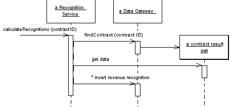
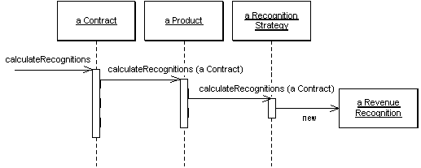
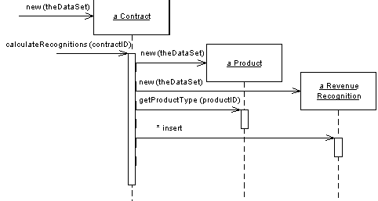
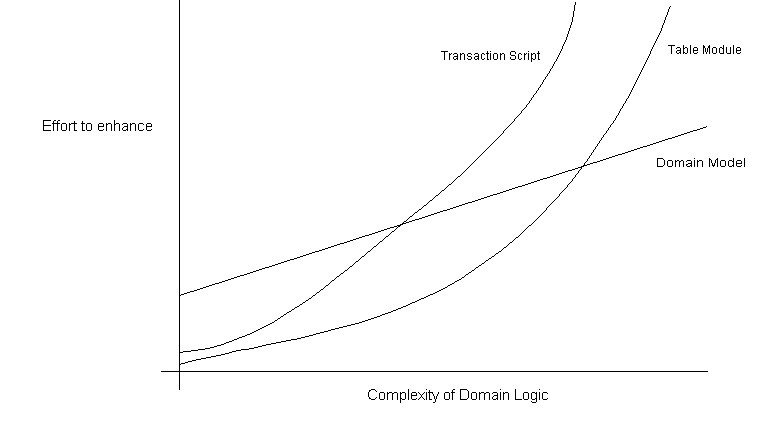

| Home | Articles | Talks | Links | Contact Me | ISA | ThoughtWorks |
The simplest approach to storing domain logic is the Transaction Script. A Transaction Script is essentially a procedure that takes the input from the presentation, processes it with validations and calculations, stores data in the database, invokes any operations from other systems and replies with more data to the presentation perhaps doing more calculation to help organize and format the reply data. The fundamental organization is of a single procedure for each action that a user might want to do. Hence we can think of it being a script for an action, or business transaction. It doesn't have to be a single inlined procedure of code, pieces get separated out into subroutines and these subroutines can be shared between different Transaction Scripts, but the driving force is still that of a procedure for each action. So a retailing system might have Transaction Scripts for checkout, add something to the shopping cart, display delivery status, and so on.
The advantages of a Transaction Script include:
Sadly there are also plenty of disadvantages, these disadvantages tend to appear as the complexity of the domain logic increases. Often there will be duplicated code as several transactions need to do similar things. Some of this can be dealt with by factoring out common subroutines, but even so much of the duplication is tricky to remove and harder to spot. The resulting application can end up being quite a tangled web of routines without a clear structure.
Of course complex logic is where objects come in, and the object-oriented way to handle this problem is with a Domain Model. For a Domain Model the primary organization is of building up a model of our domain organized primarily about the nouns in the domain. So a leasing system would have classes for lease, asset, etc. The logic for handling validations and calculations would be placed into this domain model. A shipment object might contain the logic to calculate the shipping charge for a delivery. There might still be routines for calculating a bill, but such a procedure would quickly delegate to a method in the Domain Model.
Using a Domain Model as opposed to a Transaction Script is the essence of the paradigm shift that object-oriented people talk about so much. Rather than one routine having all the logic for a user action, each object takes a part of the logic that's relevant to the object. If you're not used to a Domain Model then learning to work with it can be very frustrating as you chase from object to object trying to find where the behavior is.
It's hard to capture the essence of the difference with a simple example, but in the discussions of the patterns I've tried to do that by building a simple piece of domain logic both ways. The easiest way to see the difference is by looking at the sequence diagrams for the two approaches. The essential problem is that different kinds of product have different algorithms for figuring out how to recognize revenue on some given contract. The calculation method has to determine what kind of product a given contract is for, apply to correct algorithm, and then create revenue recognition objects to capture the results of the calculation. (For simplicity I'm ignoring the database interaction issues.)
Figure 1: A transaction script's way of calculating revenue recognitions
In Figure 1 the Transaction Script's method does all the work. The underlying objects are just Table Data Gateways, and they just pass data to the transaction script.
Figure 2: A domain model's way of calculating revenue recognitions
Contrastingly, in the Figure 2 we see multiple objects each forwarding part of the behavior to another, until a strategy object creates the results.
The value of a Domain Model lies in the fact that once you've got used to things, there are many techniques that allow you to handle more and more complex logic in a well organized way. As we get more and more algorithms for calculating revenue recognition, we can add these by adding new recognition strategy objects. With the Transaction Script we are adding more conditions to the conditional logic of the script. Once your mind is as warped to objects as mine is, you'll find you prefer a Domain Model even in fairly simple cases.
The costs of a Domain Model come from the complexity of using it and complexity of your data source layer. It takes time for people new to rich object models to get used to using a rich Domain Model. Often developers may need to spend several months working on a project that uses a Domain Model before their paradigms are shifted. However once you've got used to your first Domain Model you're usually infected for life and it becomes easy to work with them in the future - that's how object bigots like me are made. However a significant minority of developers seem to be unable to make the shift.
Even once you've made the shift, you still have to deal with the database mapping. The richer your Domain Model, the more complex your mapping to a relational database (usually using Data Mapper). A sophisticated data source layer is much like a fixed cost, it takes a fair amount of money (if you buy one) or time (if you build one) to get a good data source layer together, but once you have you can do a lot with it.
There is a third choice for structuring domain logic - Table Module. At very first blush the Table Module looks like a Domain Model since both will have classes for contracts, products and revenue recognitions. The vital difference is that whilst a Domain Model has one instance of contract for each contract in the database, a Table Module has only one instance. A Table Module is designed to work with Record Set. So the client of a contract Table Module will first issue queries to the database to form a Record Set, then it will create a contract object and pass it the Record Set as an argument. The client can then invoke operations on the contract to do various things ( Figure 3). If it wants to do something to an individual contract it must pass in an id.
Figure 3: Calculating revenue recognitions with a Table Module
A Table Module is in many ways a middle ground between a Transaction Script and a Domain Model. Organizing the domain logic around tables provides more structure than straight procedures and makes it easier to find and remove duplication. However you can't use a number of the techniques that a Domain Model can use for finer grained structure of the logic: such as inheritance, strategies and other OO patterns.
The biggest advantage of a Table Module is how it fits into the rest of the architecture. Many GUI environments are built to work on the results of a SQL query organized in a Record Set. Since a Table Module also works on a Record Set you can easily run a query, manipulate the results in the Table Module and pass the manipulated data to the GUI for display. You can also use the Table Module on the way back for further validations and calculations. A number of platforms, particularly Microsoft's COM and .NET use this style of development.
So far I've talked about the three styles of domain logic as exclusive alternatives. While it helps to explain them by showing them in a pure form, applications commonly mix Transaction Scripts with Domain Model. (Other mixes are possible, but are rarer.) In a mixed approach the question is how much behavior to put in the script and how much in the domain objects. It's a continuum, but three useful points to discuss are a dominant Transaction Script a dominant Domain Model and the controller-entity mix.
With a dominant Transaction Script you have most of your domain logic in Transaction Scripts, and you have some common behavior in relatively simple domain objects. Since the domain objects are simple, they usually map one-to-one with the database and thus you can use a simpler data source layer such as Active Record.
A dominant Domain Model will have most logic in domain objects with just some coordination code in Transaction Scripts. The middle way here is the controller-entity style the names of which come from a common practice influenced heavily by [Jacobson et al]. The point here is to have any logic that's particular to a single transaction or use-case placed in Transaction Scripts, which are commonly referred to as controllers. These are different controllers to the input controller in Model View Controller or the Application Controller so I use the term use-case controller. Behavior that's used in more than one use case goes on the domain objects which are called entities.
Although the controller entity approach is a common one, it's not one that I've ever liked much. The use-case controllers, like any Transaction Script tend to encourage duplicate code. My view is that if you decide to use a Domain Model at all you really should go the whole hog and make it dominant. The one exception to this is if you've started with a design that uses Transaction Script with Row Data Gateway, then it makes sense to move duplicated behavior on to the Row Data Gateways. This will turn them into a simple Domain Model using Active Record. But I would only do that to improve a design that's showing cracks, I wouldn't start that way.
So how do you choose between the three? It's not an easy choice, but it very much depends on how complex your domain logic is. Figure 4 is one of these non-scientific graphs that really irritate me in powerpoint presentations as it has utterly unquantified axes. However it helps to visualize my sense of how the three compare. With simple domain logic the Domain Model is less attractive because the cost of understanding it and the complexity of the data source add a lot of effort to developing it that doesn't get paid back. However as the complexity of the domain logic increases, then the other approaches tend to hit a wall where adding more features gets exponentially more difficult.
Figure 4: A sense of the relationships between complexity and effort for different domain logic styles
Your problem, of course, is to figure out where on that x axis your application lies. Sadly there's no good way of measuring that, so your only alternative is to find some experienced people who can make an initial analysis of the requirements and make a judgement call.
There are some factors that alter the curves a bit. TA team that's familiar with Domain Model will lower the initial cost of using a Domain Model. It won't lower it to same starting point as the others, because of the data source complexity, but the better the team is, the more I'm inclined to use a Domain Model.
The attractiveness of a Table Module depends very much on the support for a common Record Set structure in your environment. If you have an environment like .NET and Visual Studio where lots of tools work around a Record Set then that makes a Table Module much more attractive. Indeed I don't see a reason to use Transaction Scripts in a .NET environment. However if there's no special tooling for Record Sets, then I wouldn't bother with Table Module.
Once you've made your decision it isn't completely cast in stone, but it is more tricky to change. So it's worth up front thought to decide which way to go. If you find you did go the wrong way, then if you started with Transaction Script don't hesitate to refactor towards Domain Model. If you started with Domain Model however, then going to Transaction Script is usually less worthwhile unless you can simplify your data source layer.
When you have server domain logic that has to communicate with the client, an important question is what kind of interface should the server have? The main choice here is whether to have an http based interface or a object-oriented interface.
The most common case of an http interface is that to a web browser, and of course if you have an HTML presentation that's your main option.Http based interfaces can be used for more than just web presentations. The obvious recent candidate is the web service, which is communication between systems over http, typically using XML. XML based http communication is handy for several reasons. It easily allows a lot of data to be sent, in a structured form, in a single round trip. Since remote calls need to be minimized, that's a good thing. The fact that XML is a common format with parsers available in many platforms allows systems built on very different systems to communicate, as does the fact that http is pretty universal these days. The fact that XML is textual makes it easy to see what's going across the wire. Http is also easy to get through firewalls while security and political reasons often make it difficult to open up other ports.
Despite these reasons, however, an object-oriented interface of classes and methods has value too. An http interface isn't very explicit. It's difficult to see exactly what requests can be processed with what data. An object-oriented interface has methods with names that take parameters with names. This makes it much easier to see what can be done with the interface. Communications that don't go through a firewall can be made much more explicit by using such an interface. The methods also provide good spots to provide controls such as security and transactions.
Of course you can have the best of both worlds by layering an http interface over a object-oriented interface. All calls to the web server are translated by the web server into calls on an underlying object oriented interface. To an extent this gives you the best of both worlds, but it does add complexity since you'll need both the web server and the machinery for a remote OO interface. You should only do this if you need both an http and a remote OO API, or if the facilities of the remote OO API for security and transaction handling make it easier to deal with these issues than using non-remote objects.
In any case two patterns you need to be familiar with for this work are Remote Facade and Data Transfer Object, I talk more about those in a later chapter.
 |  |
{kind=link}
{kind=link}
{kind=link}
{kind=link}